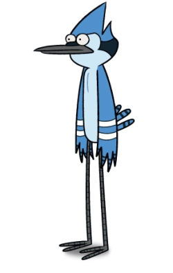

|  | Mordecai é um dos protagonistas de "Apenas um Show", um pássaro azul que trabalha no Parque com seu amigo Rigby. Ele é mais responsável e centrado do que Rigby, muitas vezes tentando evitar problemas. Mordecai é conhecido por seu senso de justiça e pelo seu relacionamento com Margaret ao longo da série. |


FEITO PELO RICCI @heitorricci